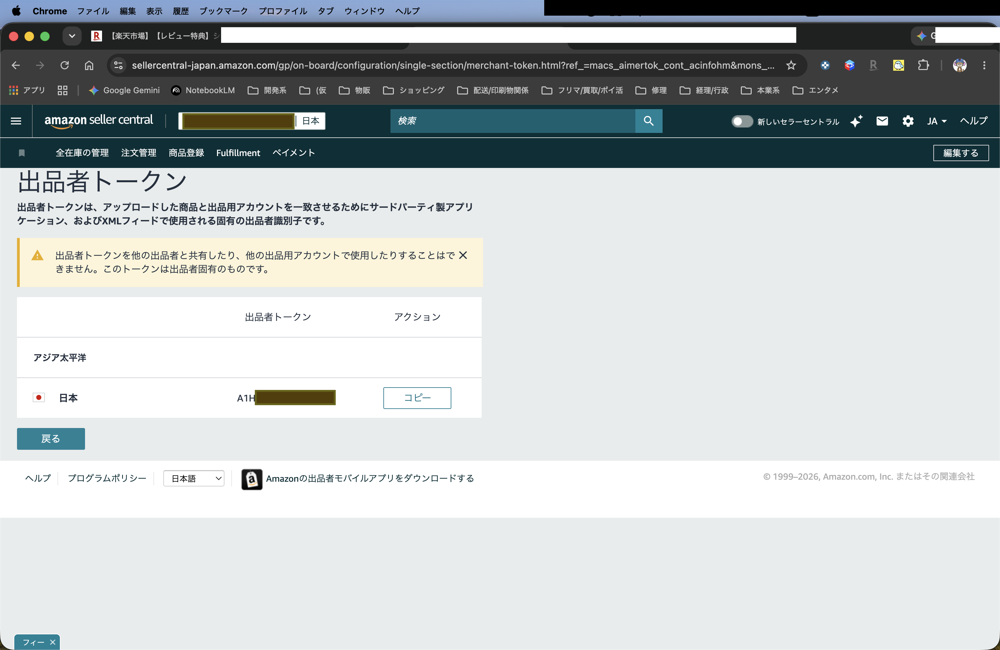
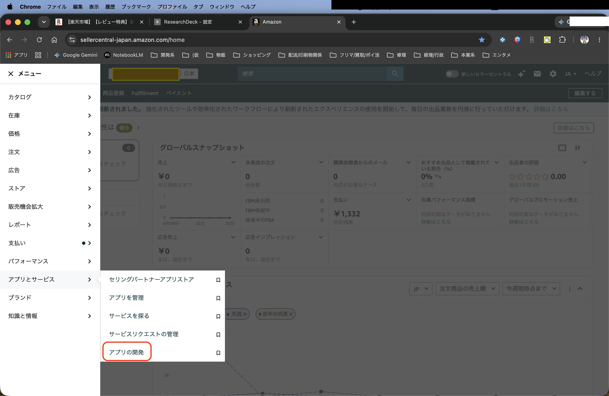
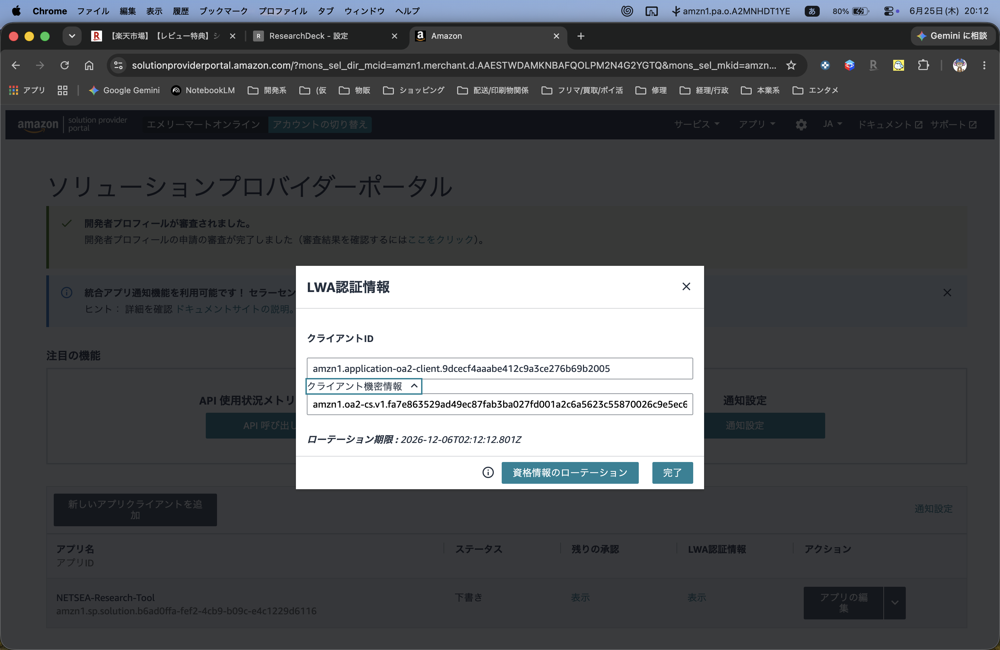
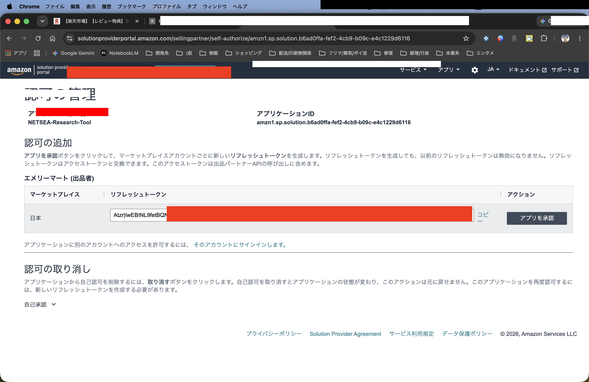
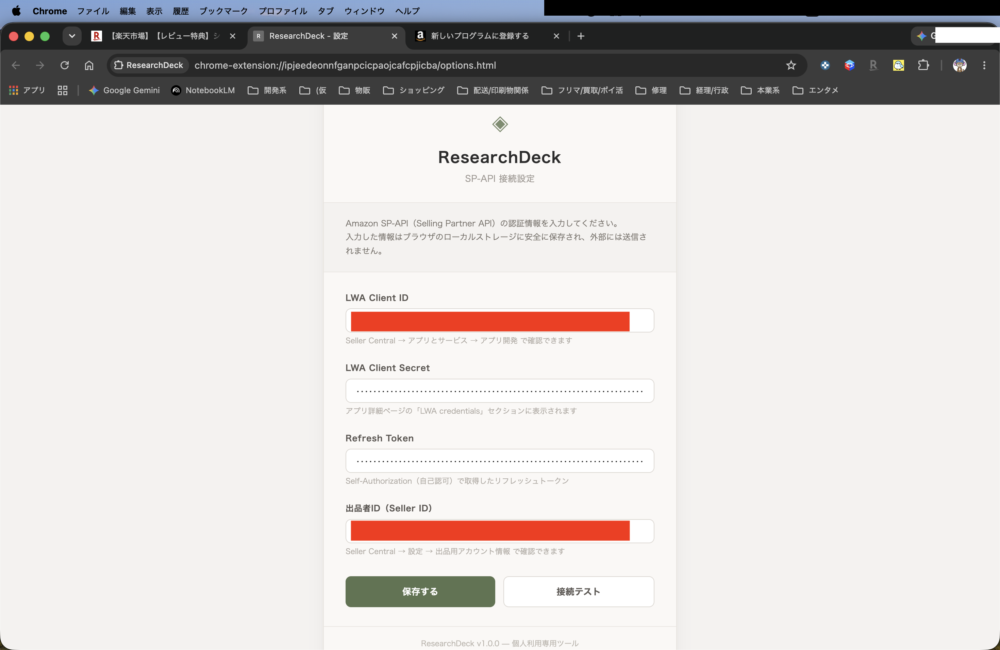

Amazon SP-API 接続設定マニュアル
本マニュアルは、リサーチツール「ResearchDeck」をAmazonのデータ（SP-API）と連携させ、動作させるために必要な **4つの認証キー** を安全に取得するための手順書です。
STEP 1
出品者トークン (Seller ID) の取得
まずはあなたのアカウント固有の識別情報である「出品者トークン（出品者ID）」を取得します。
- Amazonセラーセントラルにログインし、画面右上にある **「設定（歯車マーク）」** をクリックして **「出品用アカウント情報」** を選択します。
- 画面左側の「登録内容」セクション内にある **「出品者情報」** リンクをクリックします。
- 画面中ほどにある **「出品者トークン」** のリンクをクリックします。
- 画面に表示される `A` から始まる英数字の文字列をコピーし、右側メモ欄の **「出品者ID」** に貼り付けて保存します。

ここに「01_seller_id.png」を配置してください
STEP 2
アプリ開発画面の表示とオンボーディング
APIの接続許可を設定するため、セラーセントラルのアプリ開発者ポータルを開きます。
- セラーセントラルの左上メニュー（三本線マーク）から、**「アプリとサービス」** ➔ **「アプリの開発」** をクリックします。
- 初めてこの画面を開く場合、ソリューションプロバイダーポータルへの紐付け（オンボーディング）画面が表示されることがあります。
- 画面の指示に従い、お使いのアカウントと言語・国（日本など）を選択し、メール認証等のオンボーディング手続きを完了させてポータルのトップ画面へ進んでください。

ここに「02_app_portal.png」を配置してください
STEP 3
LWA Client ID / Secret の取得
ツールがAPIにアクセスするための「鍵」となる2つの認証情報を取得します。
- ポータルトップ画面に登録されている開発中のアプリ（例: `NETSEA-Research-Tool` など）の「LWA認証情報」列にある **「表示」** リンクをクリックします。
- ポップアップ画面に表示された **「クライアントID」** をコピーして、右側メモ欄の **「LWA Client ID」** に貼り付けます。
- 次に、**「クライアント機密情報（Client Secret）」** のアコーディオンを展開し、表示されるキーをコピーして右側メモ欄の **「LWA Client Secret」** に貼り付けます。
⚠️ 注意: これらはあなたのアカウントを制御できる最も重要な暗号鍵です。絶対に第三者に渡したり公開したりしないでください。

ここに「03_lwa_credentials.png」を配置してください
STEP 4
リフレッシュトークン (Refresh Token) の取得
ツールがAmazon APIとの通信を永続的に行うための認証トークンを取得します。
- ポータル画面で、対象アプリの右端にある「アプリの編集」ボタンの右隣にある **「∨」矢印マーク** をクリックし、メニューから **「承認」** を選択します。
- 「認可の管理」画面に切り替わったら、マーケットプレイス「日本」の右側にある **「アプリを承認」** ボタンをクリックします。
- 承認が完了すると、画面に非常に長い英数字の文字列である **リフレッシュトークン (Refresh Token)** が発行されます。**「コピー」** をクリックして右側メモ欄の **「Refresh Token」** に貼り付けます。
⚠️ 注意: リフレッシュトークンはこの画面を閉じると二度と再表示できません。必ずここでメモ欄にコピーしたことを確認してから画面を閉じてください。

ここに「04_refresh_token.png」を配置してください
STEP 5
拡張機能「ResearchDeck」への設定
最後に、取得して一時保存した4つのキーをツールの設定画面に適用します。
- Chromeブラウザのツールバーにある **ResearchDeckのアイコン** をクリックし、**「オプション」**（または歯車マーク）を選択して設定画面を開きます。
- 右側メモ欄に保管した4つのキーを、対応する入力項目にそれぞれコピー＆ペーストします。
- 入力後、**「接続テスト」** ボタンをクリックし、画面に **「接続成功」** と表示されることを確認します。
- 最後に一番下の **「保存」** ボタンをクリックすれば、すべてのセットアップが完了です！お疲れ様でした！

ここに「05_extension_setup.png」を配置してください